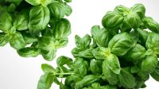

Basil
Origin
Basil is native to tropical regions of Asia and Africa, and it has been used for thousands of years. It was first cultivated in India and spread across Asia and Europe, where it became a staple in Mediterranean cooking. The name “basil” comes from the Greek word "basileus," meaning "king," reflecting its revered status in many cultures. Basil eventually migrated westward as whole plants as it could be grown easily indoors and away from exposure to cold climates and frost. (spruce eats)
More Research
Here are some articles that I got some of the above information/more research you can do on your own.
Basil
Care
Pruning basil regularly encourages it to grow bushier and produce more leaves. If you see any flower buds, remove them quickly. When basil flowers, it tends to become bitter, and it will stop producing fresh leaves.
- Direct Sunlight
- Soil is consistenly moist
- Should be spaced about 12-18 inches apart
Basil prefers well-drained, fertile soil that is rich in organic matter. A slightly acidic to neutral pH (6.0 to 7.5) is ideal.